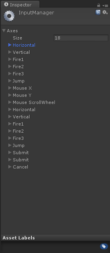
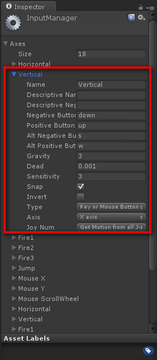
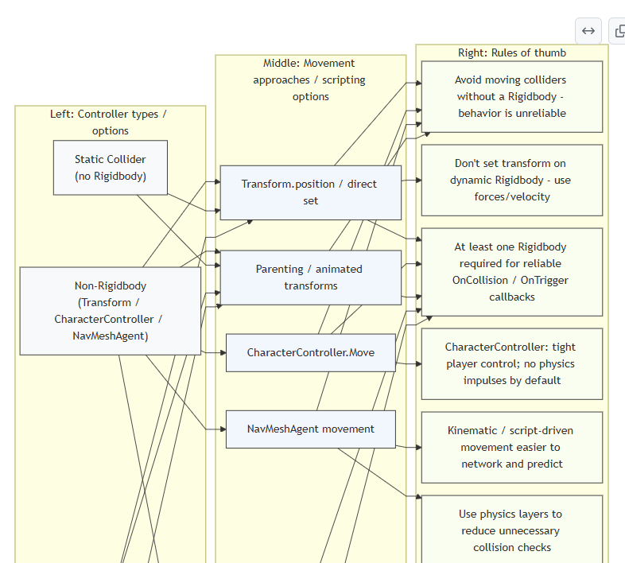
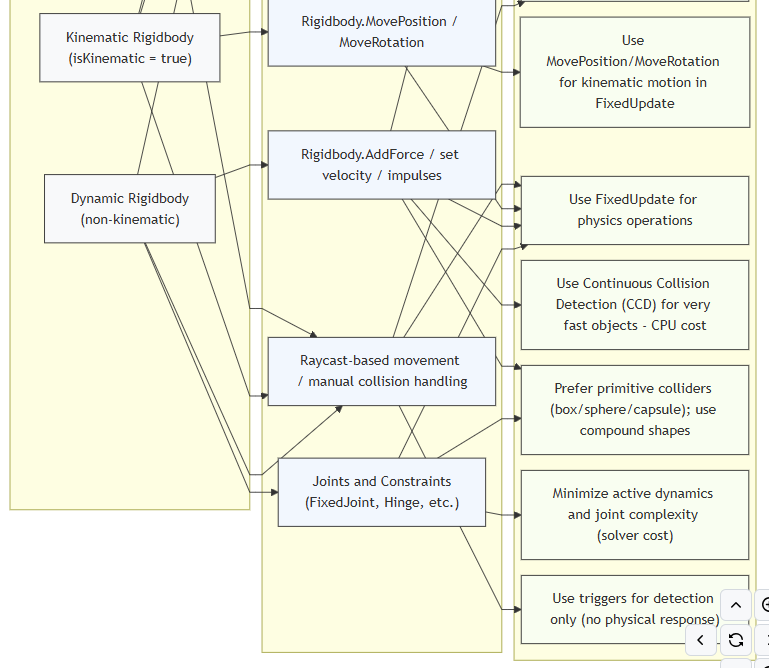
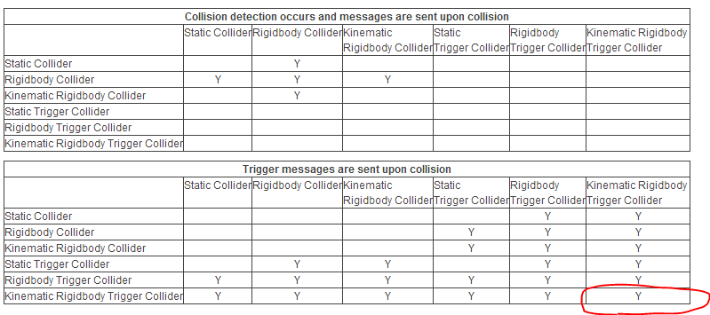
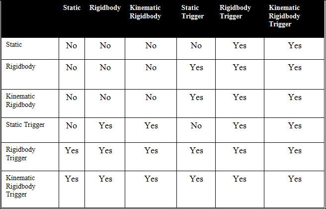
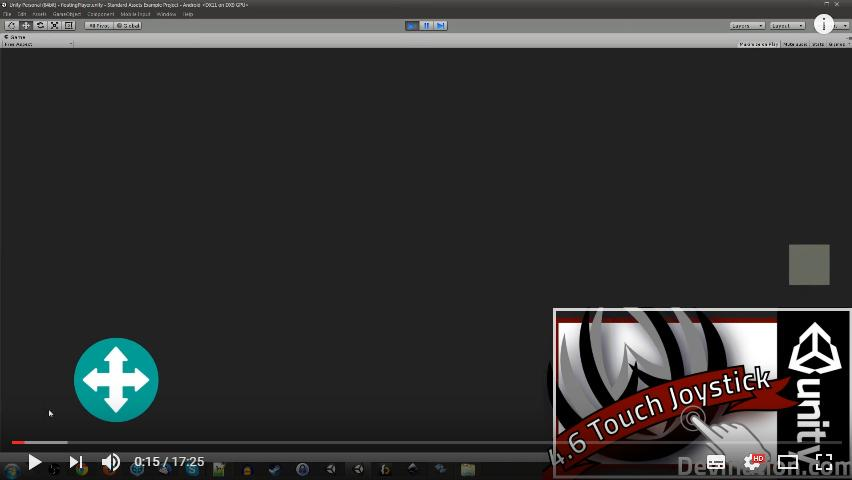

5MMCS001W Lecture 08 - Input Manager (Again), Scripted Movement, Collisions
Lecture Overview
5MMCS001W Lecture Tutorial
Input Manager (Again), Scripted Movement, Collisions
Unity Input Manager Continued
Unity Input Manager
Unity Input Manager
Each program you write, whether the program is a phone application, a web application, a game or an embedded system, needs some sort of an input. In general every program needs some sort of an input and some sort of an output. The output is what the users sees, and the input is what the user enters or gives to the program to generate the output based on some algorithm.
Unity 3D is no different. The game engine needs to be able to process inputs from different sources:
- Keyboard
- Mouse
- Joystick(s)
Unity 3D manages its inputs through the Input Manager. The Input Manage is accessible by selecting Edit->Project Settings->Input from the main menu bar.
Unity Input Manager – in Project Settings



Input Manager - Horizontal Axis Properties
Figure 1 lists all of the out of the box Input configurations defined in the game engine. Let’s go ahead and expand the first Input Definition called Horizontal. Looking at Figure 2, you will notice the attributes that are defined under the Horizontal Axis input configuration. The following are the properties of the input configuration that are important to take a note of:
- Name: the name of the axis as defines in the Input Manager. This is the name that you can refer to in your C# code for to detect and perform an operation as desired.
- Positive Button: defines the primary button that will provide the positive direction / force.
- Negative Button: defines the primary button that will provide the negative direction / force.
- Alt. Positive Button: same as the positive button, but defines a secondary input intake.
- Alt. Negative Button: same as the negative button, but defines a secondary input intake.
- Type: defines where the input source is coming from; (Keyboard/Mouse/Joystick).
- Axis: which axis in the world should the force be applied to.

Input Movement Scripting - Rotate and Get Axis
Unity Input Manager Continued
Lego Brick tutorial is animation triggers for playback
Or object transform can be adjusted directly:
Unity Scripted Movement (Not Animation Trigger)
Unity Input Manager– Movement Scripting - Rotate
Input key values to handle the rotation for the dynamically created primitives in the following order:
- Key A will be responsible to rotate Cube1’ on the Y-Axis.
- Key B will be responsible to rotate Cube2’ on the X-Axis.
- Key C will be responsible to rotate Cube3’ on the Z-Axis.
Notice, that the Update() function is where you place the logic to perform your Input and Output. The code checks to see if the primitives have been initialized, and if true, then it will check for input from the user. Based on the key value it will apply the appropriate rotation to the Game Object.
Each primitive will rotate independently only when the specific key associated to its rotation is pressed. For instance, if you press the A key, Cube1’ will continuously rotate until you stop pressing it. It will stop at the last rotation angle where you lifted your finger from the key.
Unity Input Manager – Movement Scripting - Rotate
CreatePrimitivesFromImport.cs – on Main Camera, Can access all Cube Game Objects
Rotate:
Unity Input Manager– Movement Scripting – Get Axis
https://unity3d.com/learn/tutorials/topics/scripting/getaxis?playlist=17117
Get Axis:
- Unlike Get Key and GetButton, (Bool)
- Returns float value between -1 and 1
- Setting is Input Manager – edit/Project Settings/Input/
- Horizontal and Vertical are the standard.
- Keys can be set in input manager…
Unity Scripted Movement (Not Animation Trigger)
Direct Input - Moving by setting transform.position or GetAxis from Update.
Space Relative To:
- 1, Space.Self
- 2. Space.World
Physics - Moving by calling rigidbody.MovePosition from FixedUpdate
(isKinematic)
Scalars, Points, Vectors and Vector3
More C# and Unity3D – Scalar, Points, Vector Recap
Scalars, Points, Vectors
- Three Basic types of entities to define geometric objects.
- Defined from mathematical, programming and geometric perspective.
Points
More C# and Unity3D – Scalar, Vector, Points
- In 3D geometric systems, a point is a location in space
- Only location, no size
- Best to use a reference or coordinate system to define
Vectors (Lines) and Vector3
More C# and Unity3D – Scalar, Vector, Points
Vectors (Lines)
- Connect points with Line Segments
- Also called vectors (direction and magnitude – velocity, force, length)
- Have Scalar (magnitude) values – real number
Vector3
- This structure is used throughout Unity to pass 3D positions and directions around.
- It also contains functions for doing common vector operations.
Vector3 in Scripted Movement
Unity Scripted Movement (Not Animation Trigger)
https://unity3d.com/learn/tutorials/topics/scripting/translate-and-rotate?playlist=17117
Vector3
Representation of 3D vectors and points.
This structure is used throughout Unity to pass 3D positions and directions around. It also contains functions for doing common vector operations.
Transform and Rigidbody Basics
Transform and Rigid Body
Unity Scripted Movement (Not Animation Trigger)
https://unity3d.com/learn/tutorials/topics/scripting/translate-and-rotate?playlist=17117
Transform - Update, Translate, Rotate, Scale
Position, rotation and scale of an object.
Every object in a scene has a Transform. It's used to store and manipulate the position, rotation and scale of the object.
Every Transform can have a parent, which allows you to apply position, rotation and scale hierarchically. This is the hierarchy seen in the Hierarchy pane.
Rigid Body:
Adding a Rigidbody component to an object will put its motion under the control of Unity's physics engine. Even without adding any code, a Rigidbody object will be pulled downward by gravity and will react to collisions with incoming objects if the right Collider component is also present.
Mesh, Collider, RigidBody, Kinematic and Triggers
More C# and Unity3D:
Update vs. Fixed Update, Forces and Physics, Colliders and Gravity https://www.youtube.com/watch?v=rXYjB0kdf-U
- Mesh
- Polygon mesh for rendering, rasterising, display
- Collider
- Simple invisible mesh to represent object in Physics Engine – can be box, wholes mesh
- RigidBody
- Under Unity’s Physics engine, Affected by Gravity
- Reacts to collisions with other objects that have colliders
- If Collider but no Rigid Body, is a Static Collider
- Kinematic RigidBody
- Does not move unless by animation or script control.
- Other objects with rigid bodies will react to it if both have colliiders
- Triggers
- Animation can be played
Video: Rigidbody and Collisions | Unity Tutorial
RigidBody
RigidBody:
Update vs. Fixed Update, Forces and Physics, Colliders and Gravity
Rigidbody
A Rigidbody is the main component that enables physical behavior for an object. With a Rigidbody attached, the object will immediately respond to gravity. If one or more Collider components are also added, then the object will be moved by incoming collisions.
Rigidbodies also allow your GameObjects to act under control of the physics engine. This opens the gateway to realistic collisions, varied types of joints, and other very cool behaviours. Manipulating your GameObject by adding forces to the Rigidbody creates a very different behavior than adjusting the Transform component directly. As a good rule of thumb, you shouldn’t manipulate the Rigidbody and the Transform of the same GameObject, only one or the other.
Rigidbody Body Type
Unity Scripted Movement (Not Animation Trigger)
https://unity3d.com/learn/tutorials/topics/scripting/translate-and-rotate?playlist=17117
The Body Type. Can be:
- Dynamic
- (the body moves under simulation and is affected by forces like gravity),
- Kinematic
- (the body moves under simulation, but isn't affected by forces like gravity, unless coded)
- or
- Static (the body doesn't move under simulation).
Tutorial 02-03 is Dynamic (Rigid Body) but not Kinematic – Allows Collisions, Gravity, but direct control
isKinematic
Unity Scripted Movement (Not Animation Trigger)
https://unity3d.com/learn/tutorials/topics/scripting/translate-and-rotate?playlist=17117
Controls whether physics affects the rigidbody.
If isKinematic is enabled, Forces, collisions or joints will not affect the rigidbody anymore. The rigidbody will be under full control of animation or script control by changing transform.position. Kinematic rigidbodies will affect the motion of other rigidbodies through collisions if they can be affected.
Further Reading (speaker notes)
http://www.codeproject.com/Articles/876478/UNITY-D-GAME-PROGRAMMING-PART
Kinematic vs Dynamic Rigidbodies and Controllers
Kinematic vs Non-Kinematic (Dynamic) Transform
Unity Scripted Movement (Not Animation Trigger)
| Feature | Kinematic Transform | Non-Kinematic (Dynamic) Transform |
|---|---|---|
| Movement Control | Application-controlled; motion is manually calculated and applied. | Physics-engine controlled; motion is the result of forces and collisions. |
| Forces & Gravity | Ignored by default; must be manually implemented if desired. | Actively responded to, including gravity. |
| Collisions | Must be manually handled by the user; does not automatically calculate movement adjustments. | Automatically detected and responded to by the physics engine. |
| Use Cases | Moving characters driven by animation, player-controlled objects, or objects that need predictable, non-physics-based movement. | Objects that should be affected by the world, like falling blocks, rolling balls, or any object influenced by physics. |
Controller Chart – non-RB, RB vs Dynamic, Kinematic and Static
Unity Scripted Movement (Not Animation Trigger)
Chart – non-RB, RB vs Dynamic, Kinematic and Static


Controller Types
Dynamic Rigidbody (non‑kinematic) Controllers:
Physics‑driven objects. Movement via forces/impulses/velocity. Fully simulated by the physics engine; realistic reactions to collisions, gravity, stacking.
Kinematic Rigidbody Controllers:
Script‑driven motion with a Rigidbody present but not simulated by forces. It can move other dynamic bodies but is not itself pushed by physics. Use for predictable moving objects that still need physical interactions.
Non‑Rigidbody Controllers:
Movement via Transform, CharacterController, or NavMeshAgent. Not physics‑simulated. Good for precise control, pathing, or decorative movement; requires special handling to interact with physics.
Unity Controller Matrix Project and sheet in BB
Static
Static Collider – Collider, no Rigidbody
This is a GameObject that has a collider but no Rigidbody. Static colliders are used for level geometry which always stays at the same place and never moves around. Incoming rigidbody objects will collide with the static collider but will not move it.
Dynamic RigidBody Controllers
Rigidbody Collider – Collider, (Dynamic) Non-Kinematic Rigidbody – Tut 02-03 control objects
This is a GameObject with a collider and a normal, non-kinematic Rigidbody attached. Rigidbody colliders are fully simulated by the physics engine and can react to collisions and forces applied from a script. They can collide with other objects, including static colliders, and are the most commonly used collider configuration in games that use Physics.
Kinematic RigidBody Controllers
Rigidbody Collider – Collider, Kinematic Rigidbody - best practice control objects, physics controlled
This is a GameObject with a collider and a normal, kinematic Rigidbody attached. They can be controlled by animation and scripted transforms, They can collide with other objects (other objects get affected), including static colliders (with some adjustment)
Non RigidBody Controllers - Custom and Unity Controllers
No Rigidbody Collider: Custom control code and wrapper for physics and gravity
Translate, Rotate, Update vs FixedUpdate and Time.deltaTime
Tutorial 02-03: Translate, Rotate to move
Tutorial 02-03: Translate, Rotate to move: Basic transform, rigid body, not kinematic, collider is used to affect rigid body wall
Unity Scripting API references
Time Delta Time
Unity Scripted Movement (Not Animation Trigger)
https://unity3d.com/learn/tutorials/topics/scripting/translate-and-rotate?playlist=17117
a float value for the amount of time (in ms) since the last frame was drawn to the screen. By knowing this, you have an exact reading for how far each object in the game should have moved since the frame was presented.
Multiplying all movement values by Time.DeltaTime smooths out any inconsistencies.
What it's for:
- Changing values to be based on seconds rather than based on frames.
- Multiply by Speed variable to alter it programmatically
In general, you probably want to set things up based on time rather than frames, as time is constant and framerates are not. If you drop frames, it won't affect timing of elements.
Update vs FixedUpdate
More C# and Unity3D
Update vs. Fixed Update, Forces and Physics, Colliders and Gravity
Update
Update is called once per frame, so if the game is running at 24 fps, then this will be called 24 times in a second.
As we know game never run at constant frame rate because of several reason, so update will not be called on a regular timeline, means the time between update calls may be different.
- Update is used for moving non physics objects.
- Update is used for receiving Input.
- Update is used for simple timer.
FixedUpdate
As it name suggests this will be called after fixed time duration, so time duration between two consecutive calls is always same unlike of Update where this may vary.
This is commonly used for performing physics related task, like applying force on rigidbody.
TimeDeltaTime, Speed, Velocity:
Time.deltaTime (dynamic and kinematic rigidbodies)
Kinematic rigidbodies are unaffected by physics, so they cannot have a velocity because that is in the realm of physics. Use transform.Translate instead.
https://chicounity3d.wordpress.com/2014/05/23/how-to-lerp-like-a-pro/
You must always use Time.deltaTime when moving objects over time (same speed whatever framerate),
But you must never use Time.deltaTime for input that's already framerate-independent, such as mouse movement.
Velocity (non-kinematic Rigidbodies)
Forces and Physics - MovePosition, AddForce and Best Practice
Rigidbody.MovePosition
Forces and Physics:
Moving by calling rigidbody.MovePosition or rigidbody.AddForce, both via FixedUpdate
Rigidbody.MovePosition/Fixedupdate/LateUpdate/Update What its for:
Moving a Kinematic rigidbody object not affected by physics, that will be interacting with physics objects
-or-
Moving a Non–Kinematic Dynamic rigidbody object affected by physics, that will be interacting with physics objects
You could increase the mass of the NKD rigidbody high so it won’t be pushed (Not ideal, use Kinematic).
http://answers.unity3d.com/questions/279815/how-to-move-a-kinematic-rigidbody-smoothly.html
AddForce
AddForce/Fixedupdate/LateUpdate What its for:
Moving a Non–Kinematic Dynamic rigidbody, affected by physics, that will be interacting with physics objects
As it name suggests this will be called after fixed time duration, so time duration between two consecutive calls is always the same unlike that of Update where this may vary. Mass Dependent, unless you use Addforce(ForceMode.Acceleration) or Addforce(ForceMode.VelocityChange)
https://www.reddit.com/r/Unity3D/comments/2b6uet/what_is_deltatime_and_where_is_it_useful/
Forces and Physics: With a Character
With a Character:
https://forum.unity.com/threads/collision-detection-for-kinematic-rigidbodies.885778/
https://answers.unity.com/questions/1753152/kinematic-rigidbody-does-not-collide-with-wall-whe.html
Kinematic Rigidbodies will always go through other Kinematic Rigidbodies or Static colliders without effect (not affected by forces or momentum). It Will detect collision and triggers with a non kinematic (Dynamic) Rigid Body.
If you need an object to collide with other objects, but not be affected by the forces of physics, you could either use an existing Character Controller, or use a kinematic rigidbody and code a custom collision resolution for it.
A physics based controller is not usually ideal for a character controller, as seen by this weeks Unity example.
Unity Static vs. Kinematic Best Practice (not Tuts 02-03)
Caveat: Static vs. Kinematic just affects how Unity handles Physics optimisation
You should ideally be moving rigidbodies as:
- 1. Non-Kinematic (dynamic) – RigidBody Addforce, Addtorque
- 2. Kinematic - MovePosition, MoveRotation,
- 3. All from FixedUpdate!
Non- RigidBodies: Transform.Translate and Rotate from Update
Collider Interactions and Collision Tables
Collider Interactions
More C# and Unity3D:
Update vs. Fixed Update, Forces and Physics, Colliders and Gravity
Collider Interactions
Colliders interact with each other differently depending on how their Rigidbody components have been configured.
Static Collider – Collider, no Rigidbody
This is a GameObject that has a collider but no Rigidbody. Static colliders are used for level geometry which always stays at the same place and never moves around. Incoming rigidbody objects will collide with the static collider but will not move it.
Rigidbody Collider – Collider, (Dynamic) Non-Kinematic Rigidbody – Tut 02-03 control objects
This is a GameObject with a collider and a normal, non-kinematic Rigidbody attached. Rigidbody colliders are fully simulated by the physics engine and can react to collisions and forces applied from a script. They can collide with other objects, including static colliders, and are the most commonly used collider configuration in games that use Physics.
Rigidbody Collider – Collider, Kinematic Rigidbody - best practice control objects, physics controlled
This is a GameObject with a collider and a normal, kinematic Rigidbody attached. They can be controlled by animation and scripted transforms, They can collide with other objects (other objects get affected), including static colliders (with some adjustment)
Collider, Kinematic Rigidbody, Transform - Sliding Door Example
More C# and Unity3D:
Update vs. Fixed Update, Forces and Physics, Colliders and Gravity
Collider, Kinematic Rigidbody, Transform, .Translate, .Rotate, .MoveTowards, .LookAt, FixedUpdate
(not Best Practice, but works – like Tut 02-03, should use physics)
This is a GameObject with a collider and a kinematic Rigidbody attached, the IsKinematic property of the Rigidbody is enabled. You can move a kinematic rigidbody object from a script by modifying its Transform component but it will not respond to collision and forces like a non-kinematic rigidbody.
Kinematic rigidbodies should be used for colliders that can be moved or disabled/enabled occasionally but that should otherwise behave like static colliders. The best example to illustrate this concept would be a sliding door.
The door should normally act as an immovable physical obstacle but can be opened when necessary.
Unlike a static collider, a moving kinematic rigidbody will apply friction to other objects and will “wake up” other rigidbodies when they make contact.
https://docs.unity3d.com/Manual/CollidersOverview.html#:~:text=Kinematic%20rigidbodies%20should%20be%20used,can%20be%20opened%20when%20necessary
Static, Kinematic, Rigid Body, Collision Trigger Table:


Collider, non-Kinematic Rigidbody - AddForce, MovePosition, MoveRotation
More C# and Unity3D:
Update vs. Fixed Update, Forces and Physics, Colliders and Gravity
Collider, non-Kinematic Rigidbody, RigidBody.AddForce, .MovePosition, .MoveRotation - FixedUpdate
(not Best Practice, but works – like Tut 02-03, should use physics)
If you need your moving colliders to cause physically correct effects on other objects:
- Configure "Project Settings > Physics > Contacts Pair Mode" to "Enable All Contacts"
- Move your kinematic bodies using Rigidbody.MovePosition and Rigidbody.MoveRotation from FixedUpdate.
- Now the collision events (OnCollisionEnter, etc) will happen normally as with standard rigidbodies. https://www.youtube.com/watch?v=-osaSS9L-fs
- Use FixedUpdate to get correct physics collisions, whether they move the object or not
- Use Rigidbody.AddForce or Rigidbody.MovePosition and Rigidbody.MoveRotation within FixedUpdate https://answers.unity.com/questions/1730904/object-doesnt-collide-with-wall-using-transformtra.html
Unity Collisions and Triggers
Triggers - Script Actions on Collision
More C# and Unity3D:
Update vs. Fixed Update, Forces and Physics, Colliders and Gravity
Triggers - Script Actions on Collision
When collisions occur, the physics engine calls functions with specific names on any scripts attached to the objects involved. You will need to implement the code logic in these functions to respond to the collision event.
On the first physics update where the collision is detected, the OnCollisionEnter() function is called.
During updates where contact is maintained, OnCollisionStay() function is called and finally, OnCollisionExit() function is called indicating that the contact has been broken.
Similarly, trigger colliders call the analogous OnTriggerEnter() function, OnTriggerStay() function and the OnTriggerExit() functions.
Video: Detecting Collisions on Kinematic Rigidbodies
Collision and Physics: OnCollisonEnter(Collision col)
Unity Collisions and Triggers
Collider hitting Rigid Body/Collider (for Collision Detection)
This is true Collision Detection, not Triggering in slide above
Collision and Physics: OnCollisonEnter(Collision col)
- RigidBody enables a collision - Solid
- True RB - should only move by forces - ideal situation
- IsKinematic RB, or No RB can use movement scripting
- IsTrigger Off enables a collision - Solid
RigidBody, Collision - Gravity and IsKinematic
Collision and Physics: OnCollisonEnter(Collision col) for scripting
- RigidBody, Collision
- Gravity On - Will fall
- Gravity Off, IsKinematic Off
- Acts as Static, but forces affect
- IsKinematic on
- May be moved, but not affected by forces
- Compare to Static collider: SC Is not calculated for - optimised
- Gravity On, IsKinematic On
- Is Kinematic cancels out Gravity
- Gravity Off, Is Kinematic On
- Acts as static, but is real collision
- Gravity Off, IsKinematic Off
- Gravity On - Will fall
Collision and Physics: SHORTCUT
This is true Collision Detection, not Triggering
Shortcut
- Kinematic RB Trigger Colliders - transformed to move
- True RB - Addforce
Movement Scripting
Collisions and Triggers - Unity Test Project and Demo
Unity Collisions and Triggers Unity Test Project in BB
Video: Unity 3d: Collisions, Triggers, Rigidbodies, and Kinematics

Demo
Demo:
- Make Cube and Sphere - have colliders - play - nothing, can move, but is bad (unoptimised) essentially static, even if not ticked
- RB on ball - real and physical - gravity and Collision with cube - physics engine - may just need trigger
- Add script to both - 90% just need triggers
- Collision or trigger notifies both objects
- Collision: When True RB hits collider (not trigger)
- Try box with and without IsTrigger and look at console
- Turn box non-static (RB) - add RB, has gravity, will fall - turn off gravity - then collision moves it
- Turn Box into IsKinematic - Box not moved - IsKinematic (may be moved - no Physics) vs Static (will never move - 0ptimised)
- Turn Sphere to IsKinematic - no movement, but dragging - they do not affect each other
- IsKinematic RB with IsTrigger
Raycasting and Input Widgets
Unity Scripted Movement (Not Animation Trigger)
Raycast/Linecast:
Tracks the mouse in 2D screen so we can have 3D transforms that relate.
More C# and Unity3D – Raycasting (tutorial 2)
Casts a ray, from point origin, in direction direction, of length maxDistance, against all colliders in the scene.
You may optionally provide a LayerMask, to filter out any Colliders you aren't interested in generating collisions with.
Specifying queryTriggerInteraction allows you to control whether or not Trigger colliders generate a hit, or whether to use the global Physics.queriesHitTriggers setting.
This example creates a simple Raycast, projecting forwards from the position of the object's current position, extending for 10 units.
Unity has raycasting as part of some libraries for input and selection.
Unity Scripting API references
Unity Scripted Movement (Can be Animation Trigger)
Widgets (Android 2d joystick)
2D widgets for 2D and 3D
https://software.intel.com/en-us/articles/unity-3d-touch-gui-widgets
Full 3d widget with rotate, trans (and scale?) This is advanced….
2D Touch Joystick
Video: Unity 5 Mobile Joysticks Tutorial - Touch Input 2D Spaceship Controller
Gimbals
3d Gimbal - Simple version can be buttons or sliders in 3D World with Objects

Lerp, MoveTowards and LookAt
Lerps, Eases and MoveTowards
Unity Scripted Movement (Not Animation Trigger)
Lerps – Linear increments
https://gamedevbeginner.com/the-right-way-to-lerp-in-unity-with-examples/
https://chicounity3d.wordpress.com/2014/05/23/how-to-lerp-like-a-pro/
Eases – Lerps can ease
MoveTowards
Video: Unity: Input, Simple Player Movement, and LookAt/MoveTowards
- All use Transform, Vector3, speed float, and timedeltatime
- Can wire up to UI Buttons
- More when we look at camera controls
Lerp
Lerp
Linearly interpolates between two vectors.
Interpolates between the vectors a and b by the interpolant t. The parameter t is clamped to the range [0, 1]. This is most commonly used to find a point some fraction of the way along a line between two endpoints (e.g. to move an object gradually between those points).
When t = 0 returns a. When t = 1 returns b. When t = 0.5 returns the point midway between a and b.
This is the definitive lerp and easing reference:
Lerp Practical Example:
Tap to Move:
References
Notes
http://www.thegamecontriver.com/2014/10/move-to-mouse-click-touch-position-unity.html
Lerping Script
MoveTowards
Moves a point current in a straight line towards a target point.
The value returned by this function is a point maxDistanceDelta units closer to a target/ point along a line between current and target. If the target is closer than maxDistanceDelta/ then the returned value will be equal to target (ie, the movement will not overshoot the target). Negative values of maxDistanceDelta can be used to push the point away from the target.
https://docs.unity3d.com/ScriptReference/Vector3.MoveTowards.html
Look At
Handles rotation orientation and camera interest animation to object
https://unity3d.com/learn/tutorials/topics/scripting/look?playlist=17117
https://docs.unity3d.com/ScriptReference/Transform.LookAt.html
https://docs.unity3d.com/ScriptReference/Vector3.Distance.html
Will be useful in Waypoint Cameras with swapped out targets
CW1 and Next Steps
CW1
- Unity scene with all student work via github or package import/export
- Extras assets and interactions towards CW2
- All 3 video files
- Individual reports
- Group report
- Any group planning material
- FOLLOW NAMING CONVENTION
Tutorial
- Controllers Project Example
- Rigidbody Matrix Project Example
- Map out your CW2 Interaction needs
Unity Input and Movement
Input and Movement – Seen with Week 2 and Noor tutorials – week 7
Try adding Animation Movement Scripting:
- Unity UI and movement scripting
- Lerp
- Movetowards
- Eases
- Look At
- Navigation – Prefabs 3PC, FPC, Animator for player
- TGC
- Other
- We will cover camera coding in a future lecture